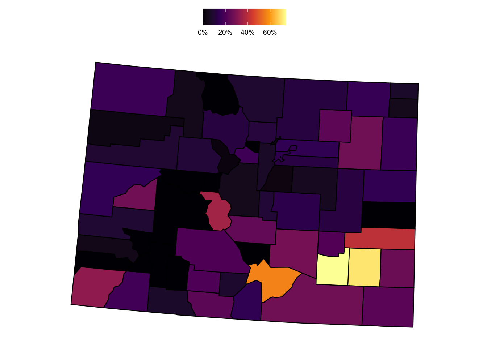

library(tidyverse)
library(tidycensus)
library(scales)
library(janitor)
library(gt)
library(usmap)
# census_api_key('INSERT KEY HERE')Introduction
I’ve used data from the U.S. Census Bureau several times, and for this project, I wanted to reacquaint myself with the tidycensus:: package to gather and wrangle data. I also wanted to use the usmap:: package to generate a simple U.S. map, and the gt:: package to display the data in a nice table format.
Setup
Data
For this analysis, I’m interested in looking at the most recent state-level child poverty data available from the U.S. Census Bureau. The tidycensus:: package allows API access to the decennial Census, as well as the more frequent American Community Survey (ACS), which I’ll use in this project.
If you’ve worked with ACS data before, you may know that there are a few survey products offered in the ACS suite. Most commonly, the choice of data is between the 1-year estimates and the 5-year estimates.
What’s the difference between these, and how do you choose which survey product to use for your purposes?
- 1-year estimates: Best used when the focus is on timeliness and the area in question has a sufficiently large population to support reliable estimates. Ideal for analyzing recent changes and trends in larger areas. While these are more current estimates, these have wider margins of error and are not available for smaller geographic areas.
- 5-year estimates: Best used when you need detailed data for small areas or when you’re comparing data across different geographies, especially if those geographies vary in population size. They are ideal for studying small populations, rural areas, or conducting detailed spatial analysis. While these are less current than the 1-year estimates, they are more reliable and available at smaller geographic scales.1
To start, I am interested in reviewing the most stable, geographically-available data on child poverty. Given that I’m less concerned with recency and more interested in broad availability, the ACS 5-year estimates are what I’ll use here.
Initial tour of key tidycensus::get_acs() function
The tidycensus:: package has so much to offer (and I still have plenty to learn!). The tidycensus::load_variables() function provides a simple way to query the available data within each survey. Combining this with stringr::str_detect() is a nice way to search through the tens of thousands of data series that are available through the U.S. Census API.
load_variables(2022, "acs1", cache = TRUE) %>%
# used this to search for some Under 5 years variables of interest
filter(str_detect(label, "Under 5 years"))# A tibble: 286 × 3
name label concept
<chr> <chr> <chr>
1 B01001A_003 Estimate!!Total:!!Male:!!Under 5 years Sex by Age (White Alone)
2 B01001A_018 Estimate!!Total:!!Female:!!Under 5 years Sex by Age (White Alone)
3 B01001B_003 Estimate!!Total:!!Male:!!Under 5 years Sex by Age (Black or Af…
4 B01001B_018 Estimate!!Total:!!Female:!!Under 5 years Sex by Age (Black or Af…
5 B01001C_003 Estimate!!Total:!!Male:!!Under 5 years Sex by Age (American In…
6 B01001C_018 Estimate!!Total:!!Female:!!Under 5 years Sex by Age (American In…
7 B01001D_003 Estimate!!Total:!!Male:!!Under 5 years Sex by Age (Asian Alone)
8 B01001D_018 Estimate!!Total:!!Female:!!Under 5 years Sex by Age (Asian Alone)
9 B01001E_003 Estimate!!Total:!!Male:!!Under 5 years Sex by Age (Native Hawa…
10 B01001E_018 Estimate!!Total:!!Female:!!Under 5 years Sex by Age (Native Hawa…
# ℹ 276 more rowsFor this demo, I’ll use the following series:
- B01001_003: Estimate!!Total:!!Male:!!Under 5 years (all racial groups)
- B01001_027: Estimate!!Total:!!Female:!!Under 5 years (all racial groups)
- B17001_004: Estimate!!Total:!!Income in the past 12 months below poverty level:!!Male:!!Under 5 years
- B17001_018: Estimate!!Total:!!Income in the past 12 months below poverty level:!!Female:!!Under 5 years
There are a bunch of useful helper functions/arguments to assist in fetching data from the Census API. Some noteworthy ones include:
- Each variable returns the geography, an estimate, and the margin of error (“moe”). Geographies can span from states, regions and the country as a whole, down to areas like school districts, voting districts, census block groups, and many others.
survey=: this defines the produce that you’re using of the American Community Survey. Responses can include “acs1”, “acs3”, or (the default) “acs5”.summary_var=: often the variable that you want would be made more meaningful as a ratio or with a demonminator. For example, the number of children in poverty could be useful on its own, but you’re likely to want to see that series as a percent of the total children. With the summary_var argument, you can tell the function which secondary variable you want to grab in the same API call.ouput=wide: related to the above, I wanted to look at child poverty in a way that would require multiple summary variables (e.g. the percent of girls and boys in poverty). Since you can only have one summary variable,output='wide'allows you to grab all of the series that you may need in the same call.
df <- get_acs(geography = 'state',
variables = c('B01001_003', 'B01001_027', 'B17001_004', 'B17001_018'),
survey = 'acs5',
year = 2022,
output = 'wide')Getting data from the 2018-2022 5-year ACSTo make the data more user-friendly, I’ll update the column names of the table.
name_cols <- c('geoid', 'state',
'u5_male_estimate', 'u5_male_moe',
'u5_female_estimate', 'u5_female_moe',
'u5_male_pov_estimate', 'u5_male_pov_moe',
'u5_female_pov_estimate', 'u5_female_pov_moe')
colnames(df) <- name_colsAnd for this exercise, I’ll also drop the margin of error fields, since I’m not doing a statistical analysis that would require it.
df <- df %>%
select(-contains("moe"))Next, I’ll create some fields to combine gender-based poverty estimates and calculate a percent of the child population measure.
(df <- df %>%
mutate(u5_pop_total = u5_male_estimate + u5_female_estimate,
u5_pov_total = u5_male_pov_estimate + u5_female_pov_estimate,
u5_perc_in_poverty = u5_pov_total / u5_pop_total))# A tibble: 52 × 9
geoid state u5_male_estimate u5_female_estimate u5_male_pov_estimate
<chr> <chr> <dbl> <dbl> <dbl>
1 01 Alabama 149474 142382 37877
2 02 Alaska 25142 23849 3842
3 04 Arizona 205506 197130 39209
4 05 Arkansas 93300 88024 23419
5 06 California 1156233 1102075 174379
6 08 Colorado 162030 155159 19559
7 09 Connecticut 93705 89063 12893
8 10 Delaware 27470 26520 5396
9 11 District of C… 21273 20249 3602
10 12 Florida 563975 540590 105449
# ℹ 42 more rows
# ℹ 4 more variables: u5_female_pov_estimate <dbl>, u5_pop_total <dbl>,
# u5_pov_total <dbl>, u5_perc_in_poverty <dbl>df %>%
filter(state != 'Puerto Rico') %>%
ggplot(
aes(x=u5_perc_in_poverty,
y=reorder(state, u5_perc_in_poverty))) +
geom_point(size=3) +
labs(y='',
x='') +
ggtitle('Percent of children under five in poverty',
subtitle = 'from the American Community Survey 2022') +
scale_x_continuous(labels = percent,
position = 'top') +
my.theme
Quick mapping with usmap::
The usmapp:: package makes rendering a map of the US quick and easy. Though it’s not meant to replace sf:: or packages that allow for more sophisticated maps, it does allow for a quick way to make a U.S. map. For this demo, I’ll plot the state-level poverty data that I collected and manipulated in earlier steps.
This shows that child poverty is concentrated in southern and southeastern states (as a percent of the child population).
(perc_poverty_map <- plot_usmap(regions = 'states',
data = df,
values = 'u5_perc_in_poverty') +
scale_fill_viridis_c(option = 'inferno', labels = scales::percent_format()) +
labs(title = md("**Estimated child poverty in U.S. states in 2022**"),
subtitle = "as a % of the total child population under 5 y.o.",
caption = "Source: 2022 American Community Survey") %>%
theme(legend.position = 'top',
legend.title = element_blank()))
Great tables with gt::
(df_tbl <- df %>%
select(state, region, u5_pov_total, u5_pop_total, u5_perc_in_poverty) %>%
# removing P.R. because it's not within a U.S. Census region
filter(state != 'Puerto Rico') %>%
arrange(-u5_perc_in_poverty) %>%
# mutate(u5_perc_in_poverty = u5_perc_in_poverty * 100) %>%
gt(groupname_col = "region") %>%
cols_label(state = 'State',
u5_pop_total = 'Total children < 5 y.o.',
u5_pov_total = 'Total children < 5 y.o. living in poverty in last 12 mos.',
u5_perc_in_poverty = '% of children < 5 y.o. living in poverty in last 12 mos.') %>%
# formatting numeric fields
fmt_number(columns = c(u5_pop_total, u5_pov_total), decimals = 0, use_seps = TRUE) %>%
fmt_percent(columns = u5_perc_in_poverty, decimals = 1) %>%
#add table title
tab_header(title = md("**Estimated child poverty in U.S. states in 2022**")) %>%
tab_source_note(source_note = "Data from 2022 American Community Survey from the U.S. Census Bureau") %>%
#apply new style to all column headers
tab_style(
locations = cells_column_labels(columns = everything()),
style = list(
#thick border
cell_borders(sides = "bottom", weight = px(3)),
#make text bold
cell_text(weight = "bold")
)
) %>%
#apply different style to title
tab_style(locations = cells_title(groups = "title"),
style = list(
cell_text(weight = "bold", size = 24)
)) %>%
data_color(
columns = u5_perc_in_poverty,
palette = viridis::inferno(100)
) %>%
opt_all_caps() %>%
opt_table_font(
font = list(
google_font("Chivo"),
default_fonts()
)
) %>%
tab_options(
#remove border between column headers and title
column_labels.border.top.width = px(3),
column_labels.border.top.color = "transparent",
#remove border around the table
table.border.top.color = "transparent",
table.border.bottom.color = "transparent",
#adjust font sizes and alignment
source_notes.font.size = 12,
heading.align = "left"
)
)Estimated child poverty in U.S. states in 2022 |
|||
|---|---|---|---|
| State | Total children < 5 y.o. living in poverty in last 12 mos. | Total children < 5 y.o. | % of children < 5 y.o. living in poverty in last 12 mos. |
| South | |||
| Mississippi | 51,039 | 178,246 | 28.6% |
| Louisiana | 81,083 | 289,842 | 28.0% |
| Arkansas | 47,419 | 181,324 | 26.2% |
| Alabama | 71,890 | 291,856 | 24.6% |
| West Virginia | 22,238 | 90,380 | 24.6% |
| Oklahoma | 56,349 | 247,466 | 22.8% |
| Kentucky | 60,553 | 266,553 | 22.7% |
| South Carolina | 62,215 | 283,281 | 22.0% |
| Tennessee | 84,127 | 402,591 | 20.9% |
| Texas | 399,635 | 1,923,422 | 20.8% |
| Georgia | 127,255 | 635,299 | 20.0% |
| North Carolina | 117,418 | 589,767 | 19.9% |
| Florida | 208,659 | 1,104,565 | 18.9% |
| Delaware | 10,040 | 53,990 | 18.6% |
| District of Columbia | 7,474 | 41,522 | 18.0% |
| Virginia | 67,470 | 494,148 | 13.7% |
| Maryland | 43,127 | 358,539 | 12.0% |
| West | |||
| New Mexico | 31,164 | 115,927 | 26.9% |
| Arizona | 76,225 | 402,636 | 18.9% |
| Nevada | 31,756 | 178,103 | 17.8% |
| Alaska | 8,109 | 48,991 | 16.6% |
| Montana | 9,435 | 59,003 | 16.0% |
| Wyoming | 5,165 | 32,789 | 15.8% |
| Idaho | 17,521 | 112,576 | 15.6% |
| California | 345,867 | 2,258,308 | 15.3% |
| Oregon | 30,617 | 215,756 | 14.2% |
| Washington | 54,426 | 440,172 | 12.4% |
| Hawaii | 10,391 | 84,552 | 12.3% |
| Colorado | 37,160 | 317,189 | 11.7% |
| Utah | 23,672 | 239,517 | 9.9% |
| Midwest | |||
| Ohio | 137,275 | 676,403 | 20.3% |
| Michigan | 109,522 | 552,803 | 19.8% |
| Indiana | 73,768 | 409,573 | 18.0% |
| Missouri | 64,822 | 360,175 | 18.0% |
| South Dakota | 9,944 | 58,085 | 17.1% |
| Illinois | 119,848 | 721,165 | 16.6% |
| Kansas | 28,269 | 180,483 | 15.7% |
| Wisconsin | 47,055 | 321,594 | 14.6% |
| Iowa | 26,764 | 189,797 | 14.1% |
| Nebraska | 17,200 | 127,312 | 13.5% |
| North Dakota | 6,644 | 51,717 | 12.8% |
| Minnesota | 37,973 | 340,546 | 11.2% |
| Northeast | |||
| New York | 205,516 | 1,121,872 | 18.3% |
| Pennsylvania | 116,758 | 688,571 | 17.0% |
| Rhode Island | 8,292 | 54,172 | 15.3% |
| New Jersey | 73,826 | 523,995 | 14.1% |
| Maine | 8,850 | 63,182 | 14.0% |
| Connecticut | 25,315 | 182,768 | 13.9% |
| Massachusetts | 43,417 | 351,208 | 12.4% |
| Vermont | 3,184 | 28,275 | 11.3% |
| New Hampshire | 5,788 | 62,919 | 9.2% |
| Data from 2022 American Community Survey from the U.S. Census Bureau | |||
Deep dive: Colorado results
df_colorado <- get_acs(geography = 'county',
# using the state argument to only fetch Colorado
state = "Colorado",
survey = 'acs5',
variables = c('B01001_003', 'B01001_027', 'B17001_004', 'B17001_018'),
year = 2022,
output = 'wide')Getting data from the 2018-2022 5-year ACS# A tibble: 64 × 9
geoid county_state u5_male_estimate u5_female_estimate u5_male_pov_estimate
<chr> <chr> <dbl> <dbl> <dbl>
1 08001 Adams County,… 17441 16659 2464
2 08003 Alamosa Count… 423 544 40
3 08005 Arapahoe Coun… 19450 18759 2309
4 08007 Archuleta Cou… 212 355 22
5 08009 Baca County, … 98 70 19
6 08011 Bent County, … 154 73 80
7 08013 Boulder Count… 6713 6645 732
8 08014 Broomfield Co… 1792 1717 43
9 08015 Chaffee Count… 476 291 137
10 08017 Cheyenne Coun… 33 85 0
# ℹ 54 more rows
# ℹ 4 more variables: u5_female_pov_estimate <dbl>, u5_pop_total <dbl>,
# u5_pov_total <dbl>, u5_perc_in_poverty <dbl>
(df_tbl2 <- df_colorado %>%
select(county, region, u5_pov_total, u5_pop_total, u5_perc_in_poverty) %>%
arrange(-u5_perc_in_poverty) %>%
gt(groupname_col = "region") %>%
cols_label(county = 'County',
u5_pop_total = 'Total children < 5 y.o.',
u5_pov_total = 'Total children < 5 y.o. living in poverty in last 12 mos.',
u5_perc_in_poverty = '% of children < 5 y.o. living in poverty in last 12 mos.') %>%
# formatting numeric fields
fmt_number(columns = c(u5_pop_total, u5_pov_total), decimals = 0, use_seps = TRUE) %>%
fmt_percent(columns = u5_perc_in_poverty, decimals = 1) %>%
#add table title
tab_header(title = md("**Estimated child poverty in Colorado by county in 2022**")) %>%
tab_source_note(source_note = "Data from 2022 American Community Survey 5-year estimates from the U.S. Census Bureau") %>%
#apply new style to all column headers
tab_style(
locations = cells_column_labels(columns = everything()),
style = list(
#thick border
cell_borders(sides = "bottom", weight = px(3)),
#make text bold
cell_text(weight = "bold")
)
) %>%
#apply different style to title
tab_style(locations = cells_title(groups = "title"),
style = list(
cell_text(weight = "bold", size = 24)
)) %>%
data_color(
columns = u5_perc_in_poverty,
palette = viridis::inferno(100)
) %>%
opt_all_caps() %>%
opt_table_font(
font = list(
google_font("Chivo"),
default_fonts()
)
) %>%
tab_options(
#remove border between column headers and title
column_labels.border.top.width = px(3),
column_labels.border.top.color = "transparent",
#remove border around the table
table.border.top.color = "transparent",
table.border.bottom.color = "transparent",
#adjust font sizes and alignment
source_notes.font.size = 12,
heading.align = "left"
)
)Estimated child poverty in Colorado by county in 2022 |
|||
|---|---|---|---|
| County | Total children < 5 y.o. living in poverty in last 12 mos. | Total children < 5 y.o. | % of children < 5 y.o. living in poverty in last 12 mos. |
| Southern | |||
| Huerfano | 157 | 325 | 48.3% |
| Bent | 102 | 227 | 44.9% |
| Otero | 449 | 1,053 | 42.6% |
| Saguache | 95 | 306 | 31.0% |
| Las Animas | 203 | 666 | 30.5% |
| Kiowa | 37 | 123 | 30.1% |
| Prowers | 204 | 792 | 25.8% |
| Pueblo | 2,284 | 9,249 | 24.7% |
| Conejos | 108 | 471 | 22.9% |
| Costilla | 32 | 166 | 19.3% |
| Rio Grande | 113 | 589 | 19.2% |
| Crowley | 30 | 173 | 17.3% |
| Baca | 22 | 168 | 13.1% |
| Alamosa | 99 | 967 | 10.2% |
| Mineral | 0 | 31 | 0.0% |
| Western | |||
| Moffat | 247 | 805 | 30.7% |
| Delta | 388 | 1,376 | 28.2% |
| Montezuma | 243 | 1,229 | 19.8% |
| Mesa | 1,535 | 8,212 | 18.7% |
| La Plata | 346 | 2,484 | 13.9% |
| Montrose | 221 | 2,067 | 10.7% |
| Garfield | 419 | 3,975 | 10.5% |
| Ouray | 8 | 145 | 5.5% |
| Archuleta | 28 | 567 | 4.9% |
| San Miguel | 9 | 229 | 3.9% |
| Routt | 39 | 1,028 | 3.8% |
| Rio Blanco | 11 | 415 | 2.7% |
| Dolores | 0 | 64 | 0.0% |
| Gunnison | 0 | 577 | 0.0% |
| Hinsdale | 0 | 23 | 0.0% |
| San Juan | 0 | 16 | 0.0% |
| Mountain | |||
| Chaffee | 199 | 767 | 25.9% |
| Jackson | 10 | 47 | 21.3% |
| Fremont | 401 | 2,014 | 19.9% |
| Eagle | 429 | 2,744 | 15.6% |
| Grand | 77 | 652 | 11.8% |
| Teller | 89 | 938 | 9.5% |
| Clear Creek | 23 | 271 | 8.5% |
| Summit | 77 | 1,026 | 7.5% |
| Park | 33 | 598 | 5.5% |
| Custer | 3 | 80 | 3.8% |
| Gilpin | 0 | 202 | 0.0% |
| Lake | 0 | 313 | 0.0% |
| Pitkin | 0 | 807 | 0.0% |
| Eastern | |||
| Morgan | 409 | 2,065 | 19.8% |
| Washington | 38 | 217 | 17.5% |
| Sedgwick | 33 | 190 | 17.4% |
| Logan | 173 | 1,168 | 14.8% |
| Yuma | 99 | 684 | 14.5% |
| Phillips | 46 | 336 | 13.7% |
| Kit Carson | 34 | 465 | 7.3% |
| Lincoln | 17 | 253 | 6.7% |
| Elbert | 61 | 1,125 | 5.4% |
| Cheyenne | 0 | 118 | 0.0% |
| Front Range | |||
| Denver | 5,834 | 39,520 | 14.8% |
| Adams | 4,776 | 34,100 | 14.0% |
| El Paso | 5,403 | 46,014 | 11.7% |
| Weld | 2,481 | 22,760 | 10.9% |
| Arapahoe | 4,156 | 38,209 | 10.9% |
| Boulder | 1,086 | 13,358 | 8.1% |
| Larimer | 1,290 | 16,353 | 7.9% |
| Jefferson | 1,907 | 28,086 | 6.8% |
| Broomfield | 93 | 3,509 | 2.7% |
| Douglas | 454 | 19,682 | 2.3% |
| Data from 2022 American Community Survey 5-year estimates from the U.S. Census Bureau | |||
Conclusion
In this first tidycensus:: post, I demonstrated:
- How to fetch data from the U.S. Census Bureau
- A simple way to search for the type of data that you’re interested in exploring
- How to use some of the
tidycensus::functions and arguments to support in data wrangling - How to make a simple map using the
usmap::package - How to make a clean and visually appealing table using the
gt::package
In Part Two of my tidycensus:: work, I’ll walk through how to pull longitudinal data from Census products using the tidycensus:: API.
Footnotes
See the Census handbook for great detail: https://www.census.gov/programs-surveys/acs/library/handbooks/general.html.↩︎